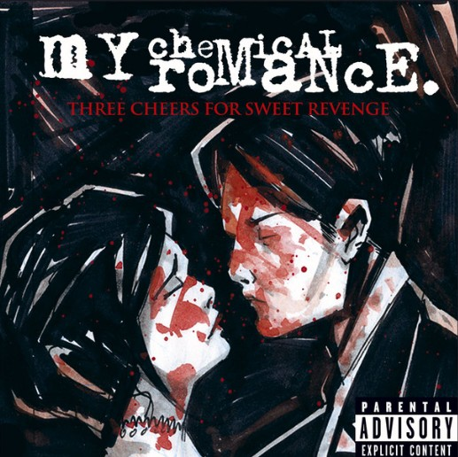

† TOCAR PARA CONTINUAR †
1 / 3
Comentario de la foto

Mi niña hermosa
Toca el sobre para leer la carta
Toca el carrete para revivir las capturas...
Querida Andrea:
27 de septiembre de 2026
Amor mío,
Te escribo una vez más, como todos los meses desde que estás en mi corazón.
Hoy me siento con ganas de expresar bastante, así que será más extensa de lo normal.
Gracias... gracias por aparecer en un momento tan inesperado en mi vida, gracias por darle alegría a mis días que siempre eran grises,
gracias... por quererme, gracias por haberme elegido en ese momento.
En realidad, soy un completo desastre, tengo mis sombras, mis grietas, y muchas veces siento que sí soy todas esas cosas malas que me conforman.
Pero Dios sabe cuánto te amo, sabe que mi amor por ti es tan real como todos mis errores.
En mi mente habitas siempre, ahí vives, te metiste sin cuidado y te instalaste ahí, y ya no te pude sacar.
Y me encantó que te quedaras ahí.
En el mundo del amor soy bastante inexperto, me equivoco y mis palabras titubean, pero estas siempre llegarán a decirte:
te quiero.
Que te quiero y quiero ser testigo de tu mirada, ser testigo de tus enojos, quiero ser testigo del roce de tus manos,
quiero ser testigo de tus labios, quiero recostarme con cuidado en tu pecho y escuchar el latido de tu corazón,
ser testigo de cómo poco a poco aprendes a respirar despacio otra vez, quiero ser testigo de tu alegría,
así también de tu tristeza, quiero ser testigo de tus palabras, quiero ser testigo de tu cariño,
como de tus silencios cargados de complejidad.
Quiero observarte de cerca, quiero contar tus lunares y besar cada uno de ellos, quiero ser testigo de ti,
quiero ser de ti.
No te miento, me muero de ganas por verte, aunque tal vez cuando lo haga mi timidez no me deje ni verte a la cara
por más de 10 segundos jajajaja, pero quiero estar cerca de ti.
Quiero que me enseñes el universo que guardan tus ojitos tan hermosos, quiero perderme en ellos como un río en el mar,
quiero que me dejes ser el compositor y, con tu voz, formar la melodía más hermosa del mundo,
y esa será la prueba de nuestro amor.
Déjame estar contigo cuando sientas que nadie más quiere estarlo, déjame ser tu compañía en tus mejores y peores momentos.
No tengo nada que ofrecerte más que mi voz desafinada, mi mirada aburrida, mis ojos cansados,
mis palabras dispersas, mis pensamientos, un lugar donde descansar, mis brazos cuando necesites calentarte
y mi alma completa.
No es mucho, pero es todo lo que tengo, y es tuyo si lo deseas.
Te confieso que cuando vi tu foto fue como: guao, ¿cómo puede existir una chica tan linda?
Y no pude evitar seguirte. Luego observé desde una esquina, sin sentido, tu gusto musical y no pude evitar escribirte.
Luego empezamos a hablar, nos fuimos acercando un poco más y no pude evitar enamorarme,
y supe que estaba enamorado de ti un domingo, cuando salí a caminar y no pude evitar imaginar que tú estabas ahí conmigo.
Desde entonces, te veo en todo lo que hago.
Y no sé casi nada de ti, pero no pierdo las ganas de conocerte, de aprender de ti,
lo más aburrido, lo más interesante, lo que nadie nunca se tomó la molestia de conocer y entender.
Y no te miento, muchas veces no sé cómo hacerlo, pero eso no quita el hecho de que sí quiero entenderte.
Pero por darme la oportunidad de intentarlo, gracias.
Puedo escribir mucho y me faltarían palabras para decirte cuánto te amo.
Y ahora que agradecí, discúlpame, discúlpame por tal vez ser tan intenso, porque nunca dejo de decirte cosas,
y tal vez en algún momento fue incómodo o agobiante para ti.
Discúlpame por expresar tanto, pero solo tengo esta vida y no sé hasta cuándo.
Discúlpame porque nunca te pregunté cómo te sentías con cada palabra que te enviaba.
¿Te gustaba?, ¿te gusta?, ¿te parece gracioso?, ¿soy un idiota?
Pero no conozco otra forma de expresarme que no sea mediante escribir y mi música mal hecha,
entonces dime: ¿qué opinas de todo esto?
Discúlpame por todas esas cosas.
Me gustó empezar a llamarte amor, y me encantó que tú también lo hicieras.
Me hizo feliz y, de igual manera, quiero que te sientas feliz.
Uno de los deseos añadidos a mi lista es que tú encuentres tu felicidad, de la manera que sea,
aun si no es conmigo.
Quiero que encuentres paz, y si en algún momento dejo de estar ahí,
espero haberte hecho feliz, al menos un poco, y que cuando te acuerdes de mí no puedas evitar sonreír.
Y mientras me lo permitas, te voy a dar lo mejor de mí, mi lado más romántico, mi lado más gracioso,
mi lado más sincero, mi lado más maduro, mi caricia más suave y mi amor más puro y noble,
lo mejor de mí, simplemente.
Te prometo repetirte las veces que sean necesarias lo especial que eres, lo importante que eres,
y lo mucho que vales, y que te mereces todo lo bonito del mundo.
PD: Te quiero un montón.
PD2: Si fue mucho texto xd.
Comentario de la foto